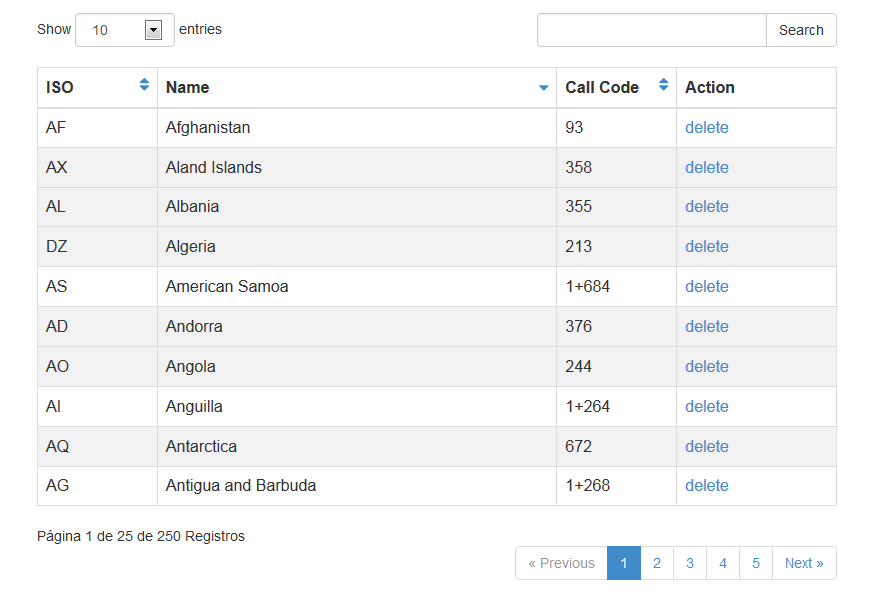
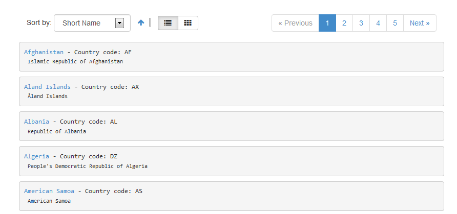

Created: 11/01/2013
By: Basilio Fajardo Gálvez
Email: bfgnet@yahoo.es
teaPagination is a script that allows you to paginate a sql statement or an array of data, is powerful and flexible as it has all the functionality to page any data you want.


<?php require('your/path/teaPagination.php'); ?><script src="your/path/teaPaginate.js" type="text/javascript"></script>
Before initializing the object must have prepared the data, which can be an array or sql query already formed.
$data = 'Select * from countries'; /*or*/ $data = array('a','b','c','d');
Set options for pagination
$options = array();
| Option | Description | Default Value |
|---|---|---|
| maxButtons (integer) | Sets the number of buttons to display | 5 |
| itemsPage (integer) | Number of rows to display | 5 |
| beginLoop (string) | Sets string to the begin of the loop | NONE |
| endLoop (string) | Sets string to the end of the loop | NONE |
| beginTagItem (string) | Sets a string at the beginning of the iteration | NONE |
| endTagItem (string) | Sets a string at the end of the iteration | NONE |
| ajax (boolean) | It does not show the button link page | false |
| nameVar (string) | Parameter name containing the page number | page |
| urlPage (string) | Allows you to customize the output url | NONE |
| textNotFound (string) | Text to be displayed when the data list is empty | Not found Record. |
| connect_db (array) | This option sets the connection parameters to the database:
| array('user' => '','database' => '','password' => '') |
| buttons (array) | Customize output buttons:
| array('btNext' => true,'btNextTitle' => 'Next »','btPreviousTitle' => '« Previous','btPrevious' => true,'btLastTitle' => 'Last','btLast' => true,'btFirstTitle' => 'First','btFirst' => true,'class' => '') |
Create an instance of the class
$pagination = new teaPagination($data, $options);
Create the list using the loop method
$pagination->loop($item_design, $callback=null, $callArgs=array());
$item_design is a string that replaces a word key by the value obtained from the data source. For example, if you have a field named 'lastName' that it replaced by its value chain adding the word {lastName}. $callback is a name function for display a more complete list, so calling an external function that will be called for each iteration of data. For example, to obtain a list of active users from the data source:
function create_list($data){if($data['user'] == 'active')return '<div>'.$data['name'].'</div>';}
And finally display the list and buttons
echo $pagination->render(); /* list */ echo $pagination->buttons(); /* buttons */
For ajax paging to use the plugin for jquery teaPaginate.js, add the following line of code between the head tags in html document:
<script src="your/path/teaPaginate.js" type="text/javascript"></script>
Now create the object for manipulation
var element = document.getElementById('example');
var paginateExample = new teaPaginate(element,{
url : server.php,
buttonsContainer : 'nameElement',
OnLoad : handlePagerSuccess,
OnBefore: handlePagerBefore,
textLoading: 'Loading...',
data:{page:1,init:true}
}).init();
JQuery has been used as external library and FirePHP.
Basilio Fajardo Gálvez